NaN 대체값을 보존하며 clamp를 정규화하기
여러 비교와 select로 표현한 clamp를 minnum·maxnum과 명시적인 NaN 선택으로 나눈다.
llvm_issue_213189_ppt.pdf의 전체 내용입니다. 설명·코드·표·검증 기록을 생략하지 않고 옮겼습니다. 그림 안의 문자 인식 결과에는 기호 오류가 있을 수 있어 이미지도 함께 제공합니다.
- MD로컬 패치 보고서CLAMP_PATCH_REPORT.md
- PDF제안·검증 발표자료 · 16쪽llvm_issue_213189_ppt.pdf
- DOCX상세 분석 보고서llvm_issue_27_analysis.docx
- DOCX그림을 추가한 수정 보고서llvm_issue_27_analysis_edited.docx
- PDF실전 사례·후속 구현 발표자료 · 18쪽llvm_issue_27_presentation.pdf
각 자료는 별도의 버전입니다. 같은 주제라도 구현 상태·설명 범위·수치가 다를 수 있습니다.
이 문서의 목차
L LV M O P E N I S S U E — 이 해 에 서 검 증 까 지 / nsz NaN-fallback [0,1] Float Clamp / 을 llvm.minnum / llvm.maxnum
LLVM OPEN ISSUE — 이해에서 검증까지
nsz NaN-fallback [0,1] Float Clamp
을 llvm.minnum / llvm.maxnum 으로 정규화하는 InstCombine 제안 분석
김준영 | LLVM 멘토십 프로그램
이해 → 선례 조사 → Alive2 형식 검증 → llvm/llvm-project Issue #213189 제출 ·assign 완료
페이지 배치·기호·도식 확인하기

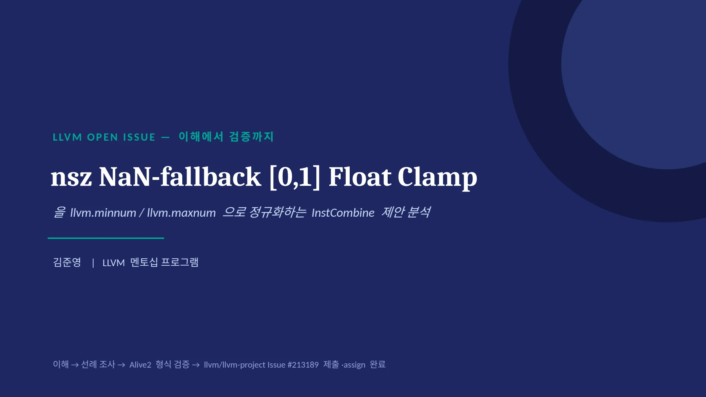
0 1 · 개 요 / 지금까지와 다른 성격의 이슈 / • 지금까지 분석한 이슈들은 이미 병합된 PR 을 사후적으로
01 · 개요
지금까지와 다른 성격의 이슈
•
지금까지 분석한 이슈들은 이미 병합된 PR을 사후적으로 역추적하는 작업이었음
•
이번 이슈는 병합된 패치가 없는 미해결 제안(open, no patch)
•
'이미 있는 답을 설명'하는 게 아니라, '아직 없는 답에 대한 판단 근거를 스스로 마련'해야 함
•
이해 단계에서 시작해 실측 실험 → Alive2 형식 검증 → 로컬 패치 구현·리뷰까지 전 과정을 진행
// 진행 흐름
1. 대상 패턴 정의
2. 선례 조사 (기존 규칙, 원조 이슈)
3. Denormal/FTZ 위험 발견
4. 실측 실험 (fcmp nsz 무관성 )
5. Alive2 형식 검증 ( 실패→성공 )
6. Poison/Undef 1 차 문헌 조사
7. 로컬 InstCombine 패치 리뷰
8. 개선안 + 최종 결론02
페이지 배치·기호·도식 확인하기

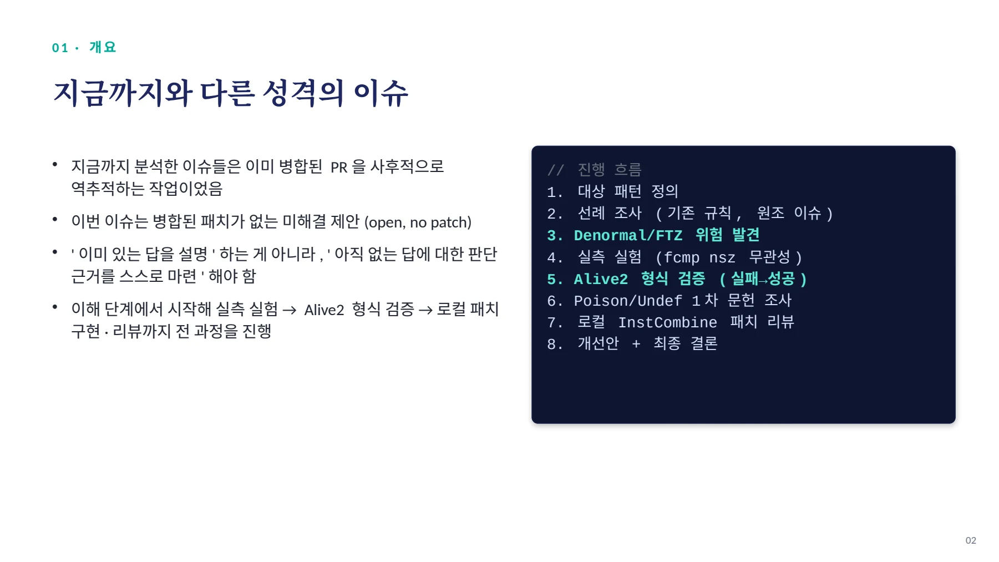
0 2 · 대 상 패 턴 / clamp + NaN-fallback → minnum/maxnum + isnan / 현재 (fcmp/select 6 개 ) 제안 (fcmp 2 + select 2 + m
02 · 대상 패턴
clamp + NaN-fallback → minnum/maxnum + isnan
현재 (fcmp/select 6 개 )
%blo = fcmp nsz ult float %x, 0.0
%bhi = fcmp nsz olt float %x, 1.0
%upper = select nsz i1 %bhi,
float %x, float 1.0
%ord = fcmp ord float %x, 0.0
%lof = select nsz i1 %ord,
float 0.0, float %fallback
%result = select nsz i1 %blo,
float %lof, float %upper제안 (fcmp 2 + select 2 + min/max 4)
%isnan = fcmp uno float %x, %x
%upper = call nsz float
@llvm.minnum.f32(float %x, 1.0)
%clamped = call nsz float
@llvm.maxnum.f32(float %upper, 0.0)
%result = select i1 %isnan,
float %fallback, float %clamped전제조건: nsz (no-signed-zeros) — 부호 있는 0의 차이를 무시해도 된다는 컴파일 옵션(-ffast-math)의 허락
03
페이지 배치·기호·도식 확인하기

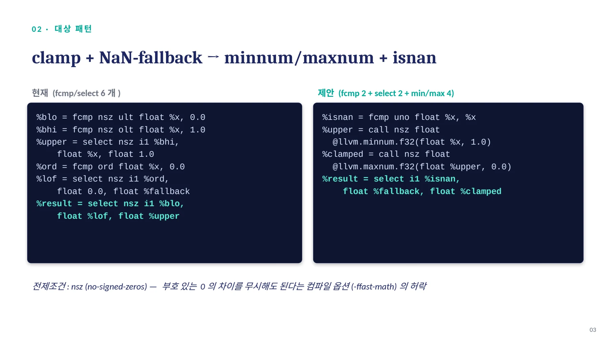
0 2 · 대 상 패 턴 — 정 확 성 근 거 / Why the relation holds — 4 가지 경우로 확인 / 입력 x src 결과 이유
02 · 대상 패턴 — 정확성 근거
Why the relation holds — 4 가지 경우로 확인
입력 x | src 결과 | 이유 |
|---|---|---|
NaN | fallback | ult 는 unordered→true, ord 는 false→fallback 선택 |
x < LO | LO | belowLoOrNan=true, NaN 아님→ LO 선택 |
LO ≤ x < HI | x | belowLoOrNan=false→upper, belowHi=true→x |
x ≥ HI 정확히 isnan(x) ? fallback : clam | HI p(x, LO, HI) — tgt의 uno/min | belowLoOrNan=false→upper, belowHi=false→HI num/maxnum이 계산하는 것과 동일. 두 형태의 유일한 차이는 부호 있는 0뿐이며, 이는 |
모든 값-생성 select에 걸린 nsz가 허락하는 범위다.
04
페이지 배치·기호·도식 확인하기

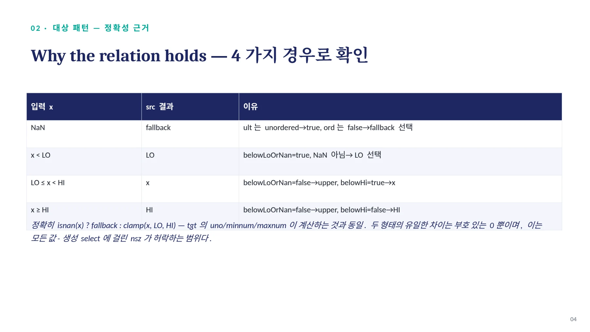
0 3 · 제 시 된 증 거 — 실 제 이 슈 # 2 1 3 1 8 9 본 문 / Alive2 증명 + 실측 비용표 + 실전 코퍼스 / Alive2 증명 ( 영구 링크 ) 백엔드 비용 실측 (llv
03 · 제시된 증거 — 실제 이슈 #213189 본문
Alive2 증명 + 실측 비용표 + 실전 코퍼스
Alive2 증명 ( 영구 링크 )
alive2.llvm.org/ce/z/NL6Xsh
nsz-only 최소 형태로 통과 확인됨백엔드 비용 실측 (llvm-mca, scalar, 100 iterations)
x86-64-v4
명령어 800 → 700 ↓ 감소
사이클 1004 → 1404 ↑ 증가
실전 코퍼스 증거
•
darktable 최적화 IR (introspection_dither.ll) 에서 정확히 일치하는 패턴 8 건 발견
•
이미지 처리 영역, 전부 -ffast-math 플래그 세트 보유
•
코퍼스 스캔은 공동연구자가 수행, 이슈는 본인이 제출·assign
AArch64 Neoverse V1
명령어 800 → 700 ↓ 감소
사이클 603 → 605 ↑ 증가
RV64 P670 (RVV)
명령어 1400 → 900 ↓ 감소
사이클 358 → 606 ↑ 증가
명령어 수는 모든 타깃에서 감소(초록 ↓), 사이클은 혼조 — x86·RISC-V는 증가(빨강 ↑), AArch64는 거의 그대로
05
페이지 배치·기호·도식 확인하기

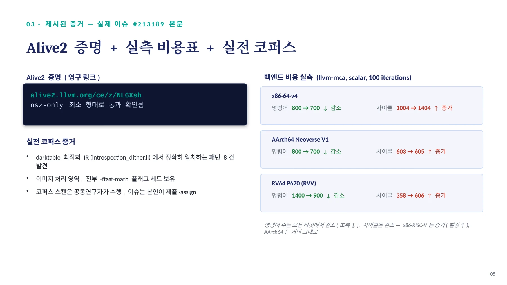
0 4 · 선 례 조 사 / 이미 존재하는 ' 절반짜리 ' canonicalization / // main 브랜치에서 직접 확인한 실제 현재 코드
04 · 선례 조사
이미 존재하는 ' 절반짜리 ' canonicalization
// main 브랜치에서 직접 확인한 실제 현재 코드
if (FCmp && FCmp->hasNoNaNs() &&
(SIFPOp->hasNoSignedZeros() ||
(SIFPOp->hasOneUse() &&
canIgnoreSignBitOfZero(*SIFPOp->use_begin())))) {
Value *X, *Y;
if (match(&SI, m_OrdOrUnordFMax(m_Value(X), m_Value(Y)))) {
Value *BinIntr = Builder.CreateBinaryIntrinsic(
Intrinsic::maxnum, X, Y, &SI);
if (auto *BinIntrInst = dyn_cast<Instruction>(BinIntr)) {
BinIntrInst->setHasNoInfs(FCmp->hasNoInfs());
BinIntrInst->setHasNoSignedZeros(true);
BinIntrInst->setHasNoNaNs(true);
}
return replaceInstUsesWith(SI, BinIntr);
• }nnan 은 select 가 아니라 fcmp 에서 확인 , nsz 는 더 느슨 , ordered 뿐 아니라 unordered(ult) 까지 매칭
}•
setHasNoNaNs(true)/setHasNoSignedZeros(true) — 조건문에서 이미 증명된 안전성을 결과에 명시적으로 강제 기록
•
→ nnan은 여전히 필수 — 이 요구를 없애고 %isnan으로 처리하자는 것이 이번 이슈의 확장 지점
06
페이지 배치·기호·도식 확인하기

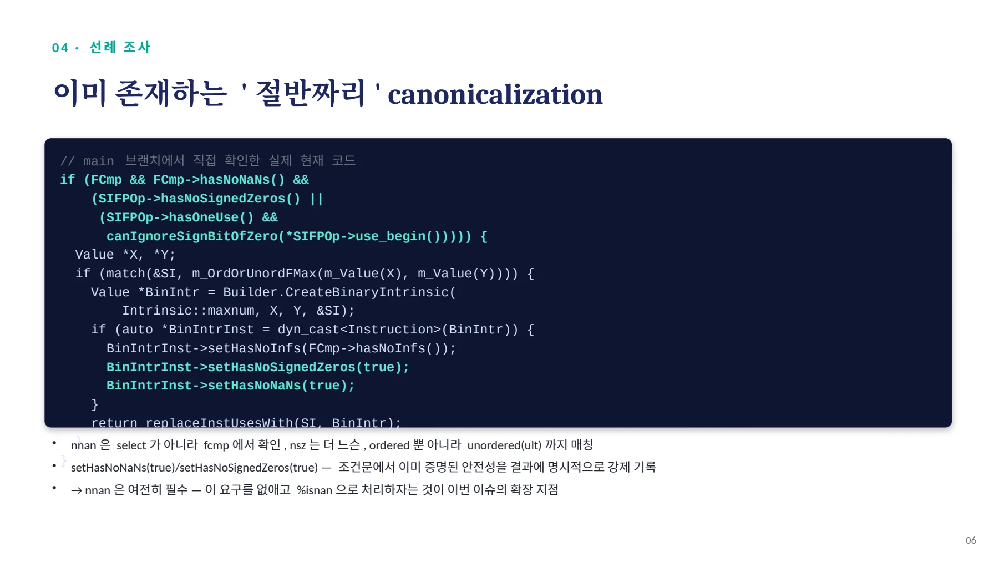
0 4 · 선 례 조 사 / 타깃 독립 원칙 & 원조 이슈와의 계보 / Target-independent 원칙
04 · 선례 조사
타깃 독립 원칙 & 원조 이슈와의 계보
Target-independent 원칙
•
"canonical form은 모든 타깃에 동일해야 하고, 타깃별 비용 모델에 의존하면 안 된다"
•
2017년 선례(D33186): x86 등 일부 백엔드가 표준 형태를 못 받아도, IR 레벨에서 정규화하고 백엔드가 흡수하도록 결정
•
→ x86 사이클 증가는 canonicalization 을 막을 이유가 아님
계보 : #157486 → PR #159652 → 이 이슈
#157486 NaN 없는 순수 double-clamp (ffmpeg 실전 코드에서 발 견 , 아직 open)
PR #159652 이를 고치려는 시도, 아직 리뷰 중(미병합)
이 이슈 여기에 'NaN이면 fallback' 까지 얹은 상위 일반화
07
페이지 배치·기호·도식 확인하기

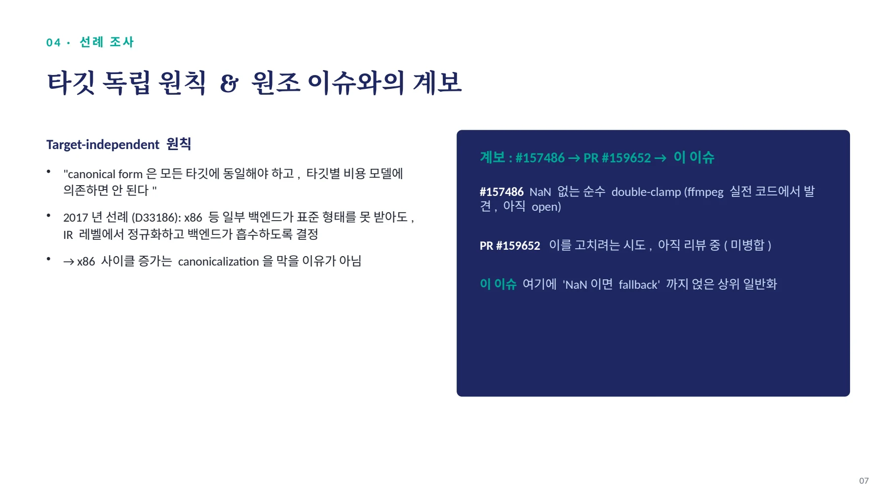
0 5 · 핵 심 발 견 / Denormal / FTZ — 아무도 안 짚은 위험 / "This is a canonicalize introducing transformation. If %arg0 is
05 · 핵심 발견
Denormal / FTZ — 아무도 안 짚은 위험
"This is a canonicalize introducing transformation. If %arg0 is
a denormal, the transformed result will be flushed but it
wouldn't in the original." — PR #159652 저자 스스로 제기한 우려•
denormal(비정규수): 0에 극도로 가까워 정상 정규화 형식을 못 쓰는 특수한 float 값
•
FTZ(flush-to-zero): 이런 값을 만나면 정확히 계산하지 않고 그냥 0으로 처리하는 하드웨어 설정
•
select(값을 그냥 통과)와 달리 minnum/maxnum(실제 연산 명령어)은 FTZ 모드에서 denormal을 부작용으로 0으로 뭉갤 수 있음
•
이슈 #27 본문 어디에도 denormal/FTZ 언급 없음 — 관련 PR 리뷰를 통해 본 분석에서 발견
08
페이지 배치·기호·도식 확인하기

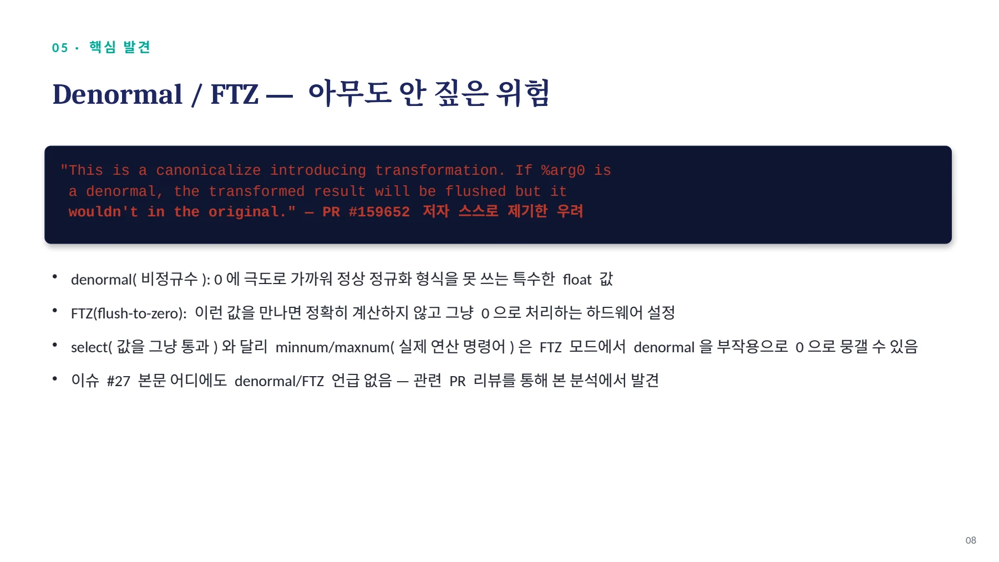
0 5 · 핵 심 발 견 / 이론이 아니라 실전 위험인 이유 / 구체적 해법 (dtcxzyw 제안 ) crtfastmath.o 연결고리
05 · 핵심 발견
이론이 아니라 실전 위험인 이유
구체적 해법 (dtcxzyw 제안)
•
denormal-fp-math 함수 어트리뷰트 — IR 에 저장된 정보 , 하드웨어 런타임 상태가 아님
•
ieee / preserve-sign / positive-zero 세 가지 모드
•
Function::getDenormalMode() 로 InstCombine 안에서 직접 조회 가능
crtfastmath.o 연결고리
이 이슈의 전제조건은 nsz
→ nsz 는 -ffast-math 를 켰을 때 나옴
→ -ffast-math 는 crtfastmath.o 를 자동 링크
→ 이 오브젝트가 x86 MXCSR의 FTZ 비트를 실제로 켬
= 이 fold가 적용되는 바로 그 상황에서
FTZ 위험도 같이 커짐
09
페이지 배치·기호·도식 확인하기

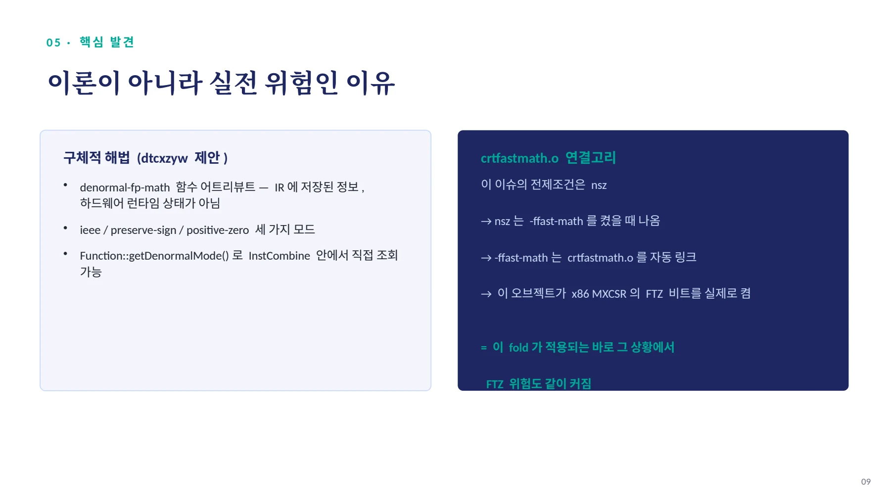
0 6 · 실 측 검 증 / fcmp 의 nsz 는 정말 무의미한가 — 직접 확인 / 실험 내용 LLVM 20.1.2 LLVM 22.1.8 일치
06 · 실측 검증
fcmp의 nsz는 정말 무의미한가 — 직접 확인
실험 | 내용 | LLVM 20.1.2 | LLVM 22.1.8 | 일치 |
|---|---|---|---|---|
① fcmp 플래그 유무 | select 에 nnan+nsz 고정 , fcmp 의 nsz 만 제거 | 결과 동일 | 결과 동일 | 예 |
② 이슈 원본 IR | 본문 src 패턴 그대로 -O3 실행 | 폴딩 안됨 | 폴딩 안됨 | 예 |
②-b select 에 nsz 보강 | upper select 에 nsz 추가 | 폴딩 안됨 | 폴딩 안됨 | 예 |
③ #157486 원조 패턴 | fcmp nsz ogt + select nsz | 폴딩 안됨 | 폴딩 안됨 | 예 |
공식 가이드('fcmp의 nsz는 무의미')를 실제 컴파일러 두 버전으로 실측 재현 — ③은 PR #159652가 아직 미병합이라는 것도 재확인
10
페이지 배치·기호·도식 확인하기

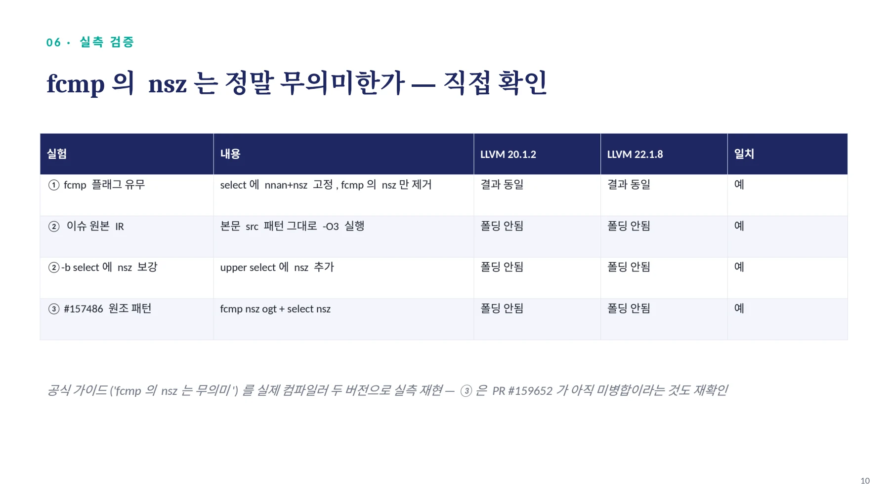
0 7 · 형 식 검 증 / Alive2 — 시도 과정과 정확한 결론 / 정확한 결론
07 · 형식 검증
Alive2 — 시도 과정과 정확한 결론
정확한 결론
이슈의 실제 목표 IR(5개 플래그 전부)은 한 번도 반증되지 않았다. 7.1·7.2의 실패는 본 분석이 select의 플래그를 누락시킨 전사 오류였고, 7.4의 '판단 불가'는 이슈 결함이 아니라 Alive2의 근사 한계다. 7.3에서 증명한 건 핵심 로직(nsz)만 남긴 검증용 축소판이다.
11

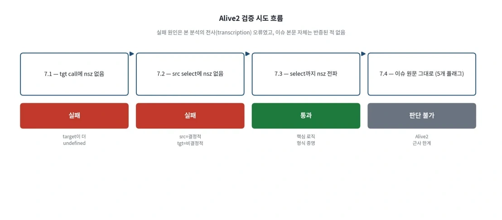
그림 안의 텍스트 · 문자 인식
7.1 -tgt call에 nsz 없음 실패 target이 더 undefined Alive2 검증 시도 흐름 실패 원인은 본 분석의 전사(transcription) 오류였고, 이슈 본문 자체는 반증된 적 없음 7.2 - src select에 nsz 없음 실패 srC=결정적 (gt=비결정적 7.3 - select까지 nsz 전파 통과 역심 로직 형식 증명 7.4 - 이슈 원문 그대로 (5개 플래그) 판단 불가 Alivez 근사 한계
이미지에서 읽은 문자입니다. 코드 기호는 그림에서 확인하세요.
페이지 배치·기호·도식 확인하기

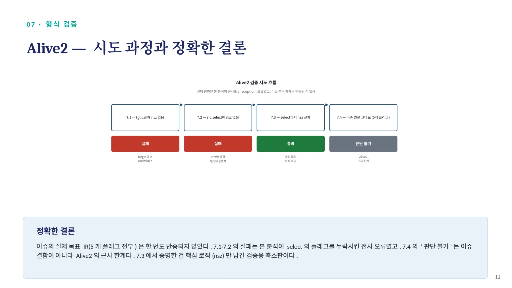
0 8 · 추 가 검 증 / Poison/Undef 조사 & fcmp nsz 재확인 / Poison/Undef (LLVM 1 차 문헌 ) fcmp 의 nsz, Alive2 로도 확정
08 · 추가 검증
Poison/Undef 조사 & fcmp nsz 재확인
Poison/Undef (LLVM 1 차 문헌 )
"min/max intrinsic은 select와 poison
시맨틱이 동일하다. 다른 건 undef다."
→ poison: 원칙적으로 안전 (설계상 동일)
→ undef: 미묘한 차이 있으나 실전 위험 낮음
fcmp 의 nsz, Alive2 로도 확정
@src: fcmp nsz olt ...
@tgt: fcmp olt ... (nsz 제거 )Transformation seems
to be correct!→ 특정 구현이 아니라, 값의 의미
자체가 nsz(fcmp)와 무관함을 증명12
페이지 배치·기호·도식 확인하기

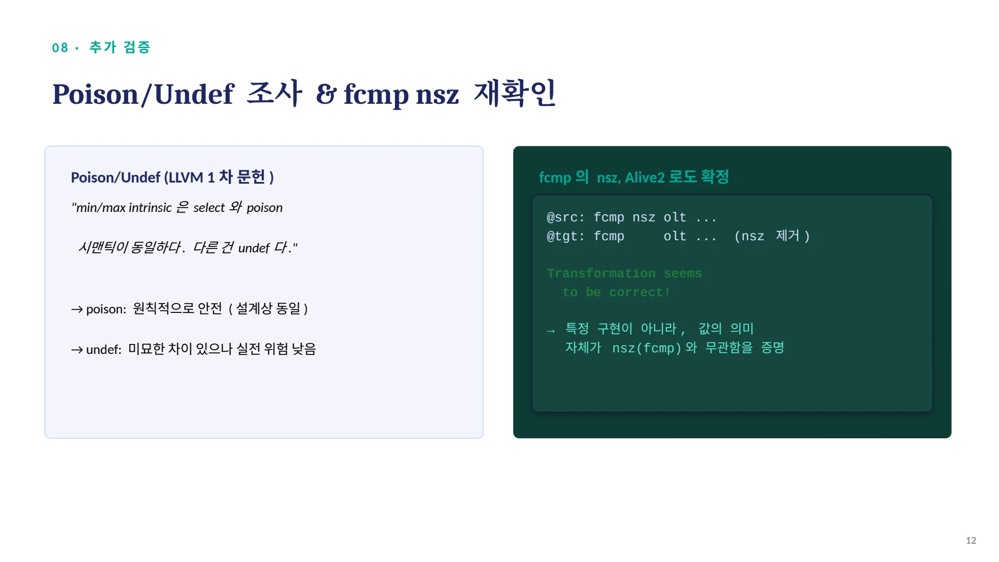
0 9 · 근 본 적 차 이 / ' 우연한 ' NaN 처리 vs ' 명시적 ' NaN 처리 / 왜 중요한가
09 · 근본적 차이
'우연한' NaN 처리 vs '명시적' NaN 처리
왜 중요한가
원조 이슈의 단순 상위 확장이 아니라, 원조 이슈가 방치한 스펙 공백(NaN 처리의 의도성)을 명시적으로 새로 정의하는 독자적 기여다. 13

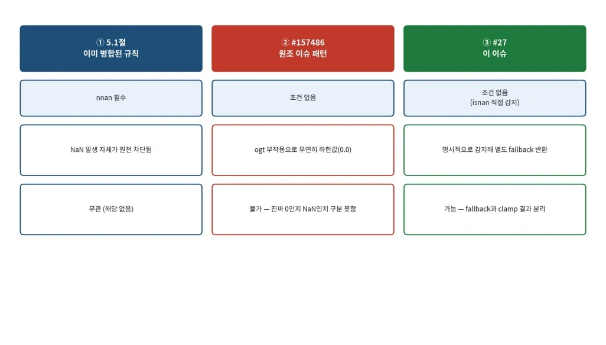
그림 안의 텍스트 · 문자 인식
①5.1절 이미 병합된 규칙 nnan 필수 NaN 발생 자체가 원천 차단됨 무관 (해당 없음) ② #157486 원조 이슈 패턴 조건 없음 ogt 부작용으로 우연히 하한값(0.0) 불가 - 진짜 0인지 NaN인지 구분 못함 ③ #27 이 이슈 조건 없음 (isnan 직접 감지) 명시적으로 감지해 별도 fallback 반환 가능 -fallback과 clamp 결과 분리
이미지에서 읽은 문자입니다. 코드 기호는 그림에서 확인하세요.
페이지 배치·기호·도식 확인하기

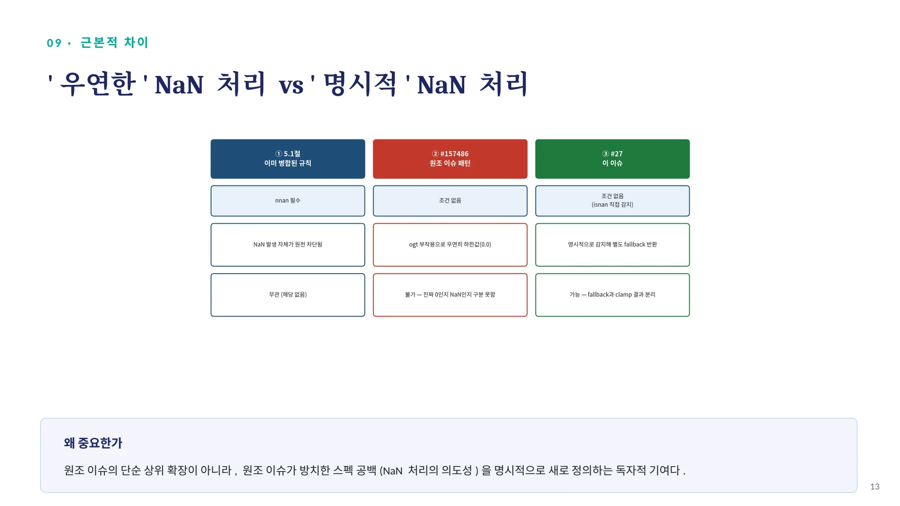
1 0 · 구 현 리 뷰 · ⚠ 참 고 용 — 이 슈 # 2 1 3 1 8 9 본 문 과 는 별 개 / 로컬 InstCombine 패치 — 잘된 점과 남은 구멍 / 이 슬라이드는 이슈 제출 전 별도
10 · 구현 리뷰 · ⚠ 참고용 — 이슈 #213189 본문과는 별개
로컬 InstCombine 패치 — 잘된 점과 남은 구멍
이 슬라이드는 이슈 제출 전 별도 실습 브랜치(experiment/clamp-nan-fold)에서 작성한 로컬 실험 결과다. 실제 이슈 #213189 본문에는 이 로컬 패치가 포함되지 않는다 — 이슈는 문제 정의·증거·제안까지만 담고, 구현은 별도 PR 단계에서 진행한다.
잘된 점
•
isa<FPMathOperator> 가드 누락으로 정수 select 에서 크래시하던 걸 회귀 테스트(336개 실패)로 실제 발견·수정
•
오탐 방지 대조군 N1~N6 — 조건을 하나씩 어긋내며 발동 조건 검증
•
전체 회귀 테스트 1750/1750 통과
•
핵심 변환은 본 분석의 Alive2 검증과 구조적으로 정확히 일치 — 값-동치성 이미 뒷받침됨
남은 구멍
•
hasOneUse() 가드 없음 — 중간값이 패턴 밖에서도 쓰이면 명령어 수가 오히려 늘 수 있음
•
매칭이 지나치게 경직 — predicate·operand 순서 고정 , commutative 변형 인식 못함
•
Denormal/FTZ 완전 미대응 — PR #159652 를 막고 있는 바로 그 문제를 이 패치도 그대로 안고 있음 (가장 중요한 공백, 이후 정식 절차에서 가드로 보강 예정)
14
페이지 배치·기호·도식 확인하기

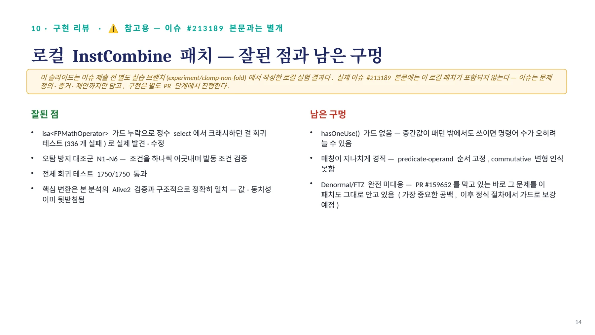
1 1 · 개 선 안 / Denormal/FTZ 가드 — 구체적 제안 / // [ 제안 ] denormal-fp-math 가 ieee 가 아니면 fold 를 건너뜀
11 · 개선안
Denormal/FTZ 가드 — 구체적 제안
// [ 제안 ] denormal-fp-math 가 ieee 가 아니면 fold 를 건너뜀
// (같은 파일 인접 코드에서 확인한 실제 관용구를 그대로 사용)
DenormalMode Mode =
Outer.getFunction()->getDenormalMode(FPSem);
if (Mode != DenormalMode::getIEEE())
return nullptr;// ... 기존 패턴 매칭 로직 계속•
같은 파일의 다른 fold(fdiv/canonicalize 패턴)에 이미 존재하는 실제 관용구 — 지어낸 API가 아님
•
GitHub 검색 결과, 기존 select→minnum/maxnum 규칙이 denormal-fp-math를 확인 안 한다고 보고한 이슈는 못 찾음 — 독자적 발견
15
페이지 배치·기호·도식 확인하기

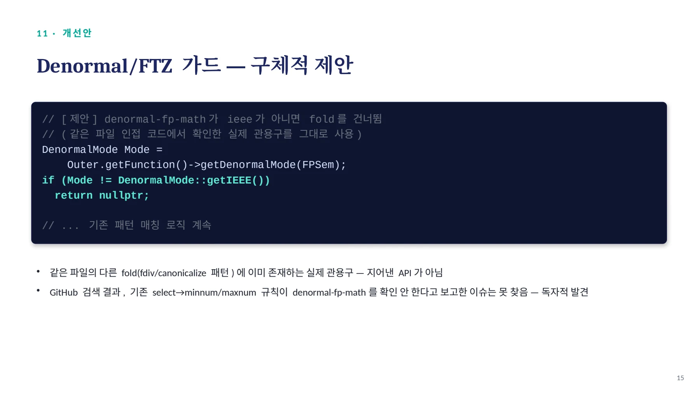
최종 결론 / 현재 상태 : llvm/llvm-project Issue #213189 로 실제 제출 ·assign 완료 / 적합 — 기존 규칙의 전제조건 완화이자 , 원조 이슈가 방치한 NaN 스펙
최종 결론
현재 상태 : llvm/llvm-project Issue #213189 로 실제 제출 ·assign 완료
1 ① 적합한 canonicalization?
적합 — 기존 규칙의 전제조건 완화이자, 원조 이슈가 방치한 NaN 스펙 공백을 채우는 기여
2 ② 추가 가드 필요?
3 ③ 타깃별 트레이드오프?
fcmp nsz·poison은 해소(형식 증명 완료). 유일한 잔여 위험은 denormal/FTZ — 이슈 본문에 가드 조건으로 명시
이슈에 실측 비용표 첨부, target-guard 여부는 리뷰어와 논의할 Open question으로 남김
다음 단계
•
LLVM 공식 기여 튜토리얼 절차 (baseline 2- 커밋 → update_test_checks.py → Alive2 → 구현 → 회귀 피라미드 ) 에 맞춰 정식 재작업
•
denormal 가드 (getDenormalMode==IEEE) 구현 + N7 오탐 테스트 추가 , 회귀 1750 개 재검증
•
Fixes #213189 로 실제 PR 제출
16
페이지 배치·기호·도식 확인하기

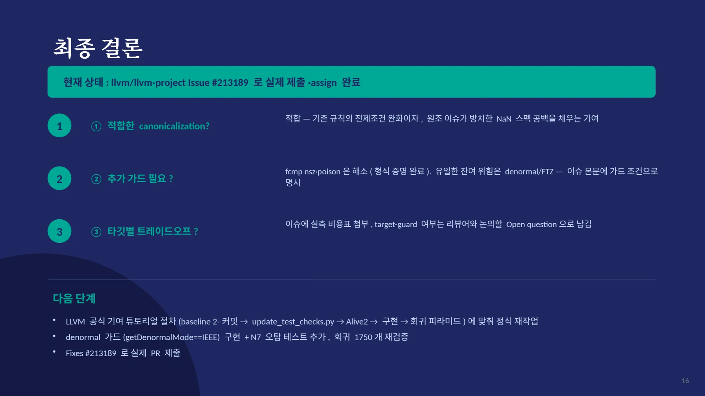
핵심 원리와 편집 주석
문제와 목표
일반 숫자는 하한과 상한 사이로 제한한다. NaN 입력에는 별도의 fallback 값을 반환한다. 기존 표현은 여러 fcmp와 select가 얽힌 트리다.
목표는 NaN 선택과 범위 제한을 분리하는 것이다. 범위 제한은 llvm.minnum과 llvm.maxnum으로 표현한다.
; 구조를 설명하기 위한 요약이다. 실제 적용에는 아래 조건이 필요하다.
%isnan = fcmp uno float %x, %x
%upper = call nsz float @llvm.minnum.f32(float %x, float 1.0)
%clamped = call nsz float @llvm.maxnum.f32(float %upper, float 0.0)
%result = select i1 %isnan, float %fallback, float %clamped변환 조건
- 값을 만드는 select에서 필요한 signed-zero 허용 조건을 확인한다.
- 하한과 상한의 순서를 확인한다.
- scalar 또는 부동소수점 vector 타입으로 범위를 제한한다.
- denormal 처리 모드가 변환의 의미를 바꾸는지 확인한다.
- NaN 입력에서는 fallback이 그대로 선택되어야 한다.
fcmp는 +0과 -0을 같은 값으로 비교한다. 비교 명령의 nsz 여부와 값을 만드는 명령의 nsz 요구를 구분해야 한다.
분석과 검증 과정
| 단계 | 확인한 질문 |
|---|---|
| 입력 분류 | NaN, 하한 미만, 범위 안, 상한 초과에서 결과가 같은가? |
| 선례 조사 | 기존 min/max fold는 어떤 fast-math 조건을 요구하는가? |
| 형식 검증 | Alive2가 가정한 FP·poison·undef 의미에서 변환이 성립하는가? |
| 환경 확인 | FTZ 또는 denormal 설정이 정규화의 의미를 바꾸는가? |
| 백엔드 확인 | min/max가 타깃의 명령어로 내려가는가, 함수 호출이 되는가? |
자료에는 성공한 증명뿐 아니라 실패한 시도와 그 원인도 남아 있다. 형식 검증의 결론은 도구가 모델링한 조건 안에서 읽어야 한다.
자료별 구현 단계
DOCX는 패턴 정의, 선례, 실험, 검증과 로컬 구현 검토를 상세히 다룬다. 수정 DOCX에는 설명 그림과 용어 정리가 추가되었다.
16장 발표자료는 이슈 제안과 별도 실습 브랜치를 구분한다. 18장 발표자료는 darktable 사례와 이후 브랜치의 구현 상태를 추가한다.
Markdown 패치 보고서는 로컬 구현과 회귀 테스트 결과를 설명한다. 각 자료의 숫자와 구현 상태는 해당 버전의 기록이다.
결과와 남은 문제
단순한 수식 치환을 FP 의미론, 실제 사용 사례, 검증 조건으로 확장한 기록이다. 이후 발견한 타입 크래시와 타깃별 비용 문제는 별도 문서에서 설명한다.
NaN을 별도로 처리해도 minnum·maxnum에 근거 없는 nnan을 붙일 수는 없다. 이 차이가 일부 타깃의 libcall 비용으로 이어질 수 있다.
문서 전문과 버전
- MD로컬 패치 보고서CLAMP_PATCH_REPORT.md
- PDF제안·검증 발표자료 · 16쪽llvm_issue_213189_ppt.pdf
- DOCX상세 분석 보고서llvm_issue_27_analysis.docx
- DOCX그림을 추가한 수정 보고서llvm_issue_27_analysis_edited.docx
- PDF실전 사례·후속 구현 발표자료 · 18쪽llvm_issue_27_presentation.pdf
각 자료는 별도의 버전입니다. 같은 주제라도 구현 상태·설명 범위·수치가 다를 수 있습니다.
관련 이슈와 PR
구현·병합 상태와 측정값은 해당 제출 자료의 작성 시점 기준입니다.